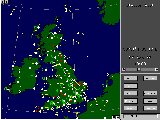
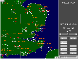
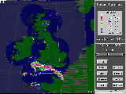
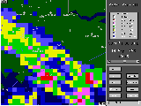
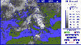
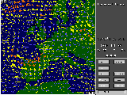

MIST is The Met. Office's PC based weather information system. Developed in collaboration with Matra Marconi Space specifically for businesses who need to make weather critical decisions. The system allows users to dial The Met. Office and download all the latest information direct to their PC.
A wide range of data is available and is continuously being updated some of the many displays available are shown below. Please click on the picture to download a typical screen-shot of the display (approx. 30 KBytes each).

Surface Observations
Observations are available every hour for the UK and three hourly for Europe.
The station plot provides all the information you need for an immediate
view of the current weather through out the country from The Met. Office's
extensive observing network.

Surface Observations (zoom in)
MIST allows you to select the weather elements you wish to see displayed.
A full plot of the station circle on MIST is shown, including the present
weather symbol, wind speed and direction, pressure, temperature as well
as cloud type height and amount.

Rainfall Radar
Every 15 minutes the latest radar information is updated on MIST allowing
you to monitor both the location and intensity of rainfall.
Sequences can be set up of images at quarterly, half hourly or hourly
intervals, enabling you to track the movement of rainfall.

Rainfall Radar (zoom in)
With the easy to zoom map, your local district or area of interest can
instantly be displayed. The range of features that can be put on the map
is user configurable, allowing any combination of towns, roads, railways
and rivers to be displayed.

Satellite Picture
An hourly Meteosat Infra red satellite picture is available for both the UK and Europe. This shows cloud top temperature, and gives a complete overview from space of the current meteorological situation.

Forecast Wind fields
Forecast wind charts derived from The Met. Office numerical models are available on MIST, all displayed on a zoomable map, wind speeds are easily viewed, for those users carrying out wind sensitive applications a threshold facility colour codes wind speeds over a nominated strength.
For further information contact the MIST Product Manager:
Colin Hord
Tel.No.+44 (0)1344 856284
Fax.No.+44 (0)1344 854943
Email: cjhord@meto.govt.uk
Postal Address: The Met.Office, Room 1/4, Sutton House, London Road,
Bracknell, Berks. RG12 2SY.

{kind=link}
{kind=link}
{kind=link}
{kind=link}
{kind=link}
{kind=link}